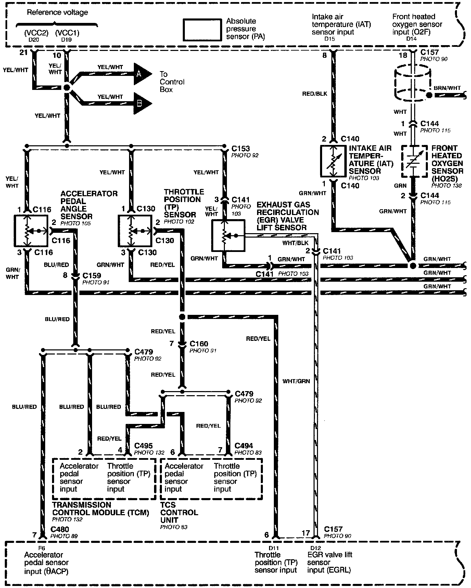
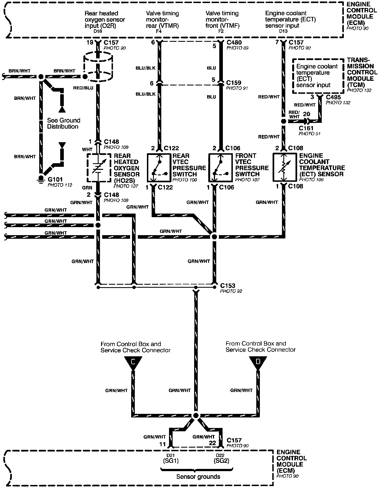
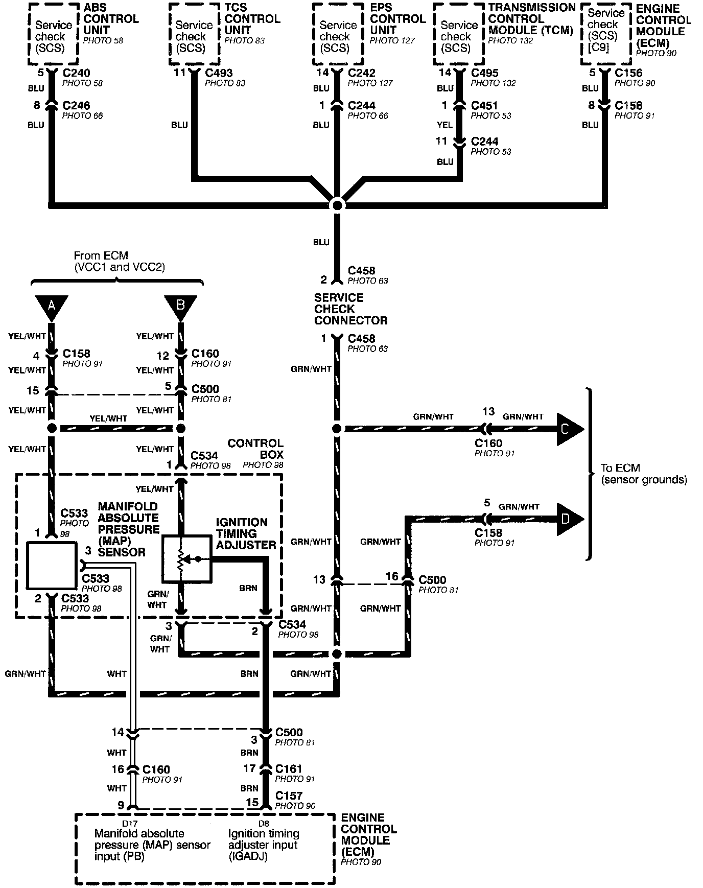
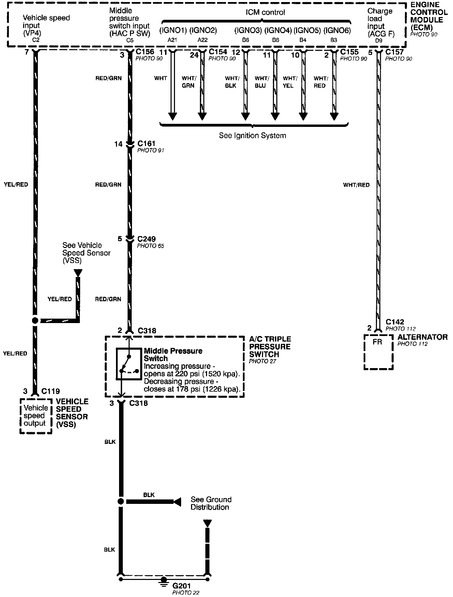
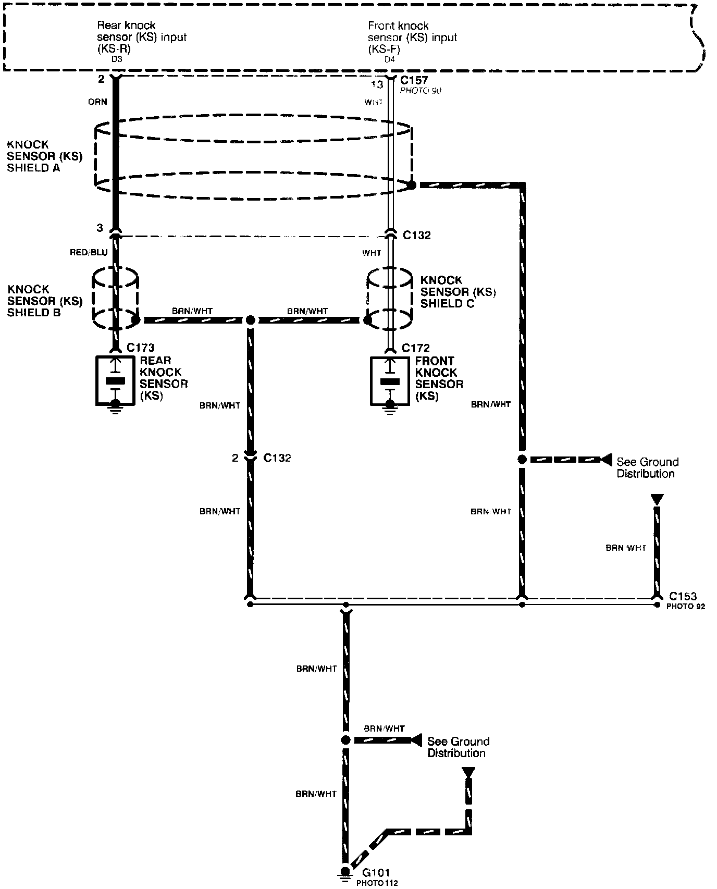
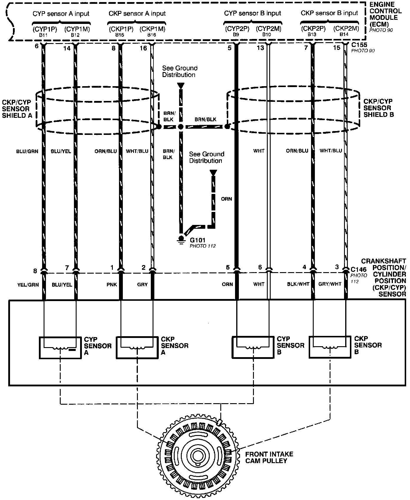
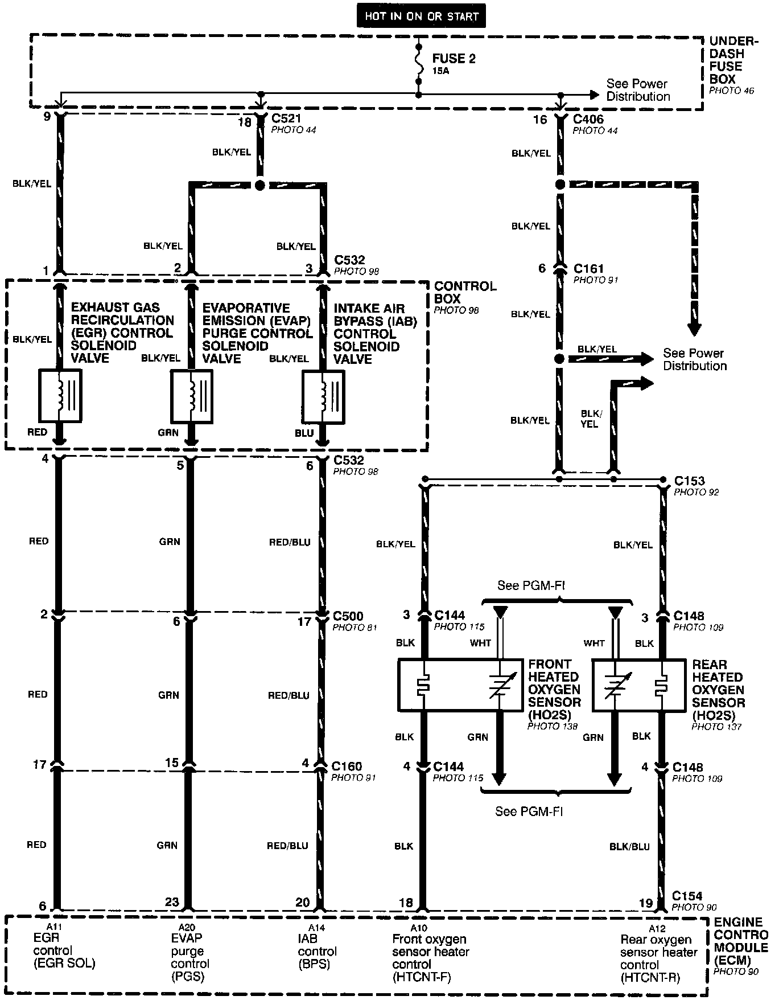
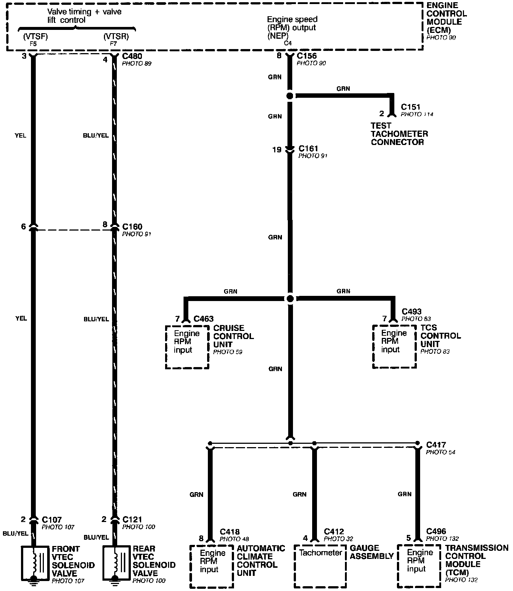
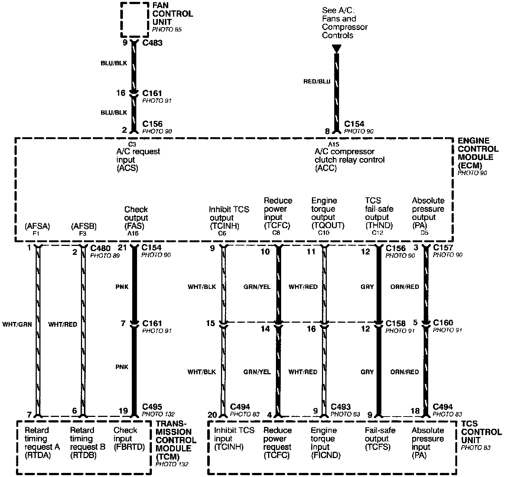

Engine and Vehicle Data Sensors
Programmed Fuel Injection System (PGM-FI) - Engine And Vehicle Data Sensors (Part 1 Of 9):

Programmed Fuel Injection System (PGM-FI) - Engine And Vehicle Data Sensors (Part 2 Of 9):

Programmed Fuel Injection System (PGM-FI) - Engine And Vehicle Data Sensors (Part 3 Of 9):

Programmed Fuel Injection System (PGM-FI) - Engine And Vehicle Data Sensors (Part 4 Of 9):

Programmed Fuel Injection System (PGM-FI) - Engine And Vehicle Data Sensors (Part 5 Of 9):

Programmed Fuel Injection System (PGM-FI) - Engine And Vehicle Data Sensors (Part 6 Of 9):

Programmed Fuel Injection System (PGM-FI) - Engine And Vehicle Data Sensors (Part 7 Of 9):

Programmed Fuel Injection System (PGM-FI) - Engine And Vehicle Data Sensors (Part 8 Of 9):

Programmed Fuel Injection System (PGM-FI) - Engine And Vehicle Data Sensors (Part 9 Of 9):
